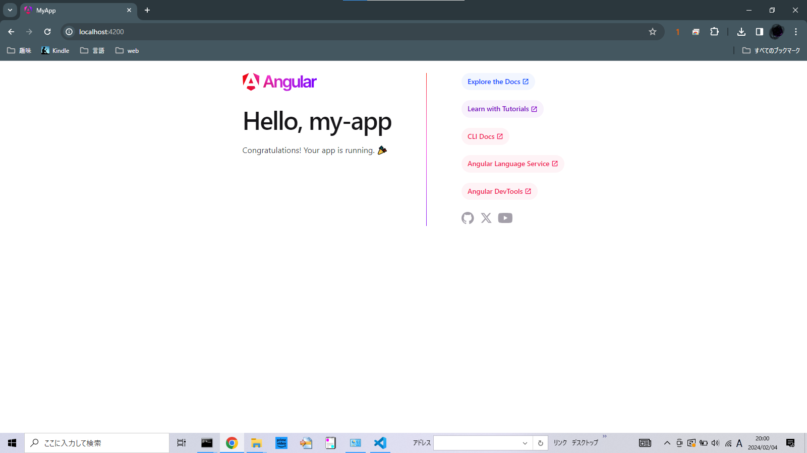

<div class="container">
    <div class="article">
        <div class="row">
            <!--メインコンテンツ　ここから-->
            <div class="col-xs-12 col-md-8 ">
                <div class="card h-0 mb-3 mr-3">
                    <div class="card-body">
                        <div class="">
                            <hr>
                            <h1 id="mainTitle">
                                <p>Angularの導入からサーバー起動まで(2024年2月作成)</p>
                            </h1>

                            <br>
                            <h2 id="">
                                <p>Angularとは</p>
                            </h2>
                            <p>TypeScript, CSS, HTML で実装されたWebアプリケーションフレームワーク。
                                簡単にフロントエンド（web画面）の Web サイトを開発できます。</p>
                            <h2 id="環境">環境</h2>
                            <ul>
                                <li>・Windows 10</li>
                                <li>・Angular 17.0</li>
                            </ul>
                            <div class="highlight">
                                <pre><code>PS C:\angularStudy\MyApp> ng version
     _                      _                 ____ _     ___
    / \   _ __   __ _ _   _| | __ _ _ __     / ___| |   |_ _|
   / △ \ | '_ \ / _` | | | | |/ _` | '__|   | |   | |    | |
  / ___ \| | | | (_| | |_| | | (_| | |      | |___| |___ | |
 /_/   \_\_| |_|\__, |\__,_|_|\__,_|_|       \____|_____|___|
                |___/
    

Angular CLI: 17.0.9
Node: 20.10.0
Package Manager: npm 10.2.3
OS: win32 x64

Angular: 17.0.8
... animations, common, compiler, compiler-cli, core, forms
... platform-browser, platform-browser-dynamic, platform-server
... router
---以下省略---
PS C:\angularStudy\MyApp> </code></pre>
                            </div>

                            <h2 id="">Angularをインストール</h2>
                            <p>Node.jsのパッケージを管理するシステムであるnpmを用いて導入します。
                                Nodeのインストール手順がまだの方は、以下の方の手順がわかりやすいため、
                                下記URLを参照し、適宜インストールしてください。

                            </p>
                            <a
                                href="https://qiita.com/sefoo0104/items/0653c935ea4a4db9dc2bs">https://qiita.com/sefoo0104/items/0653c935ea4a4db9dc2b</a>

                            <h2 id="">npmでDjangoをインストールする。</h2>
                            <p><code [innerHTML]>$ npm install -g &#064;angular/cli</code></p>

                            <p><code>$ ng version</code></p>
                            <p>でAngularが表示されていればインストール完了です。</p>
                            <h2 id="">Angularを動かしてみる</h2>
                            <h3 id="プロジェクトの作成">プロジェクトの作成</h3>
                            <p>まずはプロジェクトを作成します。</p>
                            <p><code>$ ng new my-app</code> </p>

                            <p>コマンドを実行したディレクトリに、my-app というディレクトリができます。</p>
                            <h3 id="サーバーを起動する">サーバーを起動します。</h3>
                            <p>my-appディレクトリに移動します。</p>
                            <p><code>$ cd my-app</code></p>

                            <p>サーバーを起動します。
                                http://localhost:4200でブラウザからアクセスします。</p>
                            <div class="highlight">
                                <pre><code>C:\work\sample>cd my-app
C:\work\sample\my-app>
C:\work\sample\my-app>ng serve

Initial Chunk Files | Names         |  Raw Size
polyfills.js        | polyfills     |  83.46 kB |
main.js             | main          |  22.09 kB |
styles.css          | styles        |  95 bytes |

                    | Initial Total | 105.64 kB

Application bundle generation complete. [3.494 seconds]
Watch mode enabled. Watching for file changes...
  ➜  Local:   http://localhost:4200/
  ➜  press h + enter to show help
                        </code></pre>
                            </div>
                            <p>デフォルトの場合は<code>http://localhost:4200</code>
                                にアクセスし、以下の画面が表示されればサーバーの起動に成功している。</p>
                            <p></p>

                            <p>CTRL + C でサーバーを終了します。</p>
                            <p>ここまでが導入からテストサーバーの起動までの解説となります。</p>
                        </div>
                    </div>
                </div>
            </div>
            <!--メインコンテンツ　ここまで-->

            <!--サブコンテンツ　ここから-->
            <div class="col-xs-12 col-md-4 ">
                <!--カード　ここから-->
                <div class="container mb-5">
                    <div class="card-deck ">
                        <div class="card" style="width: 18rem;">
                            <div class="card-body">

                            </div>
                        </div>
                    </div>
                </div>
                <!--カード　ここまで-->

            </div>
        </div>
    </div>
</div>